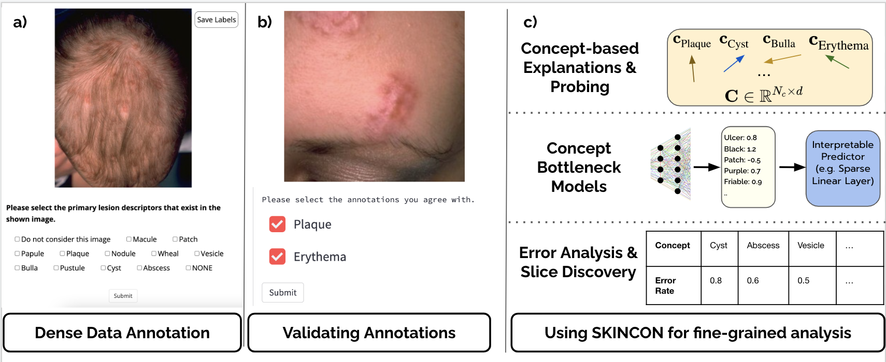

Recent progress in generative artificial intelligence (gen-AI) has enabled the generation of photo-realistic and artistically-inspiring photos at a single click, catering to millions of users online. To explore how people use gen-AI models such as DALLE and StableDiffusion, it is critical to understand the themes, contents, and variations present in the AI-generated photos. In this work, we introduce TWIGMA (TWItter Generative-ai images with Metadata Annotations), a comprehensive dataset encompassing 800,000 gen-AI images collected from Jan 2021 to March 2023 on Twitter, with associated metadata (e.g., tweet text, creation date, number of likes). Through a comparative analysis of TWIGMA with natural images and human artwork, we find that gen-AI images possess distinctive characteristics and exhibit, on average, lower variability when compared to their non-gen-AI counterparts. Additionally, we find that the similarity between a gen-AI image and human images (i) is correlated with the number of likes; and (ii) can be used to identify human images that served as inspiration for the gen-AI creations. Finally, we observe a longitudinal shift in the themes of AI-generated images on Twitter, with users increasingly sharing artistically sophisticated content such as intricate human portraits, whereas their interest in simple subjects such as natural scenes and animals has decreased. Our analyses and findings underscore the significance of TWIGMA as a unique data resource for studying AI-generated images.
